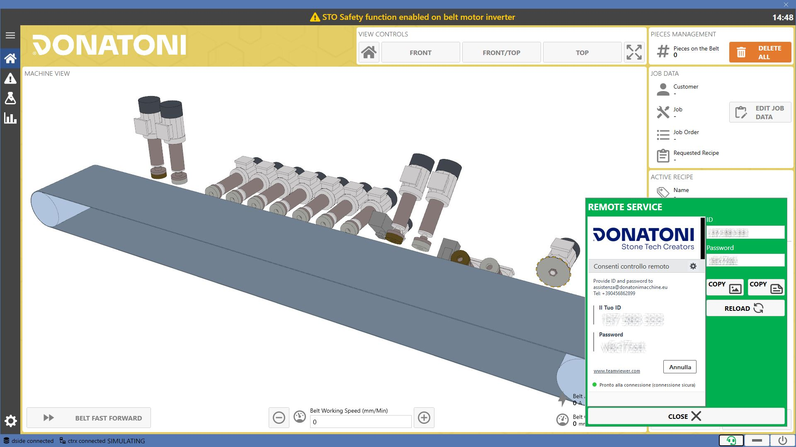
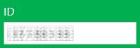
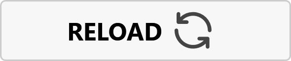

Das System wurde entwickelt, um den Bediener bei der Bearbeitung der Werkstücke zu unterstützen. Mit der Software ist Folgendes möglich:
Rezepte für die Bearbeitung der Werkstücke erstellen
Die Konfiguration der Gruppen und Elemente der Maschine prüfen und ändern
Die Ausführung der Bearbeitungen am Bildschirm überwachen
Statistiken zur Maschine und zu den von ihr ausgeführten Arbeiten anzeigen

Betriebszustand der Maschine
Der Betriebszustand der Maschine zeigt an, ob sie sich in Bearbeitung befindet, auf Anweisungen wartet, eine Warnung vorliegt oder ein Fehler aufgetreten ist.
Jedem Zustand ist eine Farbe zugeordnet, die im Hintergrund der Anwendungsseiten sichtbar ist.
Warten | |
 | Bearbeitung |
 | Fehler |
 | Warnzustand |
Seitenmenü
Über das Seitenmenü kann zwischen den verschiedenen Seiten des Programms navigiert werden.

Menü | |
 | Home |
 | Alarme |
 | Rezepte |
Statistiken | |
 | Einstellungen |
Obere Leiste
In der oberen Leiste der Anwendung werden die aktiven Warn- und Fehlermeldungen angezeigt. Außerdem wird der Name des derzeit in die Maschine geladenen Rezepts angezeigt.
Der Bediener kann durch Drücken auf die Meldungen die Alarmseite öffnen.

 | Aktives Rezept |
Fehler | |
Warnung |
Untere Leiste
Auf der rechten Seite des unteren Bereichs jedes Bildschirms befinden sich die Funktionstasten.
Fernwartung | |
 | Minimieren |
Herunterfahren |
Fernwartung
Durch Drücken der Fernwartungstaste in der unteren Leiste kann ein Fenster mit ID und Kennwort geöffnet werden. Diese Daten sind bei Bedarf dem technischen Kundendienst von Donatoni mitzuteilen, um eine Fernverbindung zur Maschine zu ermöglichen.

Das Fernwartungssymbol und der Hintergrund des Fensters sind grün, wenn das System online und verbindungsbereit ist, andernfalls rot.
 | ID |
 | Kennwort |
Als Bild kopieren | |
 | Als Text kopieren |
 | Erneut hochladen |
Schließen |
 | Als Bild kopieren |
Als Text kopieren | |
 | Erneut hochladen |